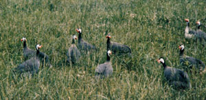
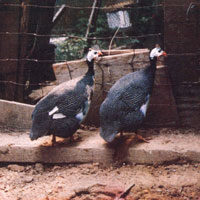

If you've ever taken a leisurely evening drive down what you thought was a blissfully deserted country road, only to have your solitude dramatically interrupted by what appeared to be a crazed flock of screaming, tail-less mini-turkeys descending upon your car from out of nowhere, then you may have concluded that you never wish to see (or hear!) a guinea fowl again.
However, if you were to raise your own flock, you'd more likely than not come to adore-rather than detest-these wacky birds. Their caterwauling would soon be music to your ears, since the cacophonous sounds would let you rest secure in the knowledge that your faithful feathered "watchdogs" were hard at work alerting you to any approaching strangers . . . human or animal.
What's more, this turkeylike fowl is one of the most efficient natural pest controls imaginable. If given the freedom of your yard and garden (and, because they're typically somewhat wild, guineas need to be allowed to range), they'll consume mosquitoes, chiggers, grasshoppers, and Japanese beetles . . . to mention only a few of their favorite morsels. Better still, these birds won't scratch up your garden or devour your young greenery, as chickens often do. Your vegetation is quite safe when you put guineas on garden patrol.
Furthermore, besides serving guard and insect-control duty, guinea fowl can supply their owners with food. Their eggs, although small, are quite tasty . . . and (as a final benefit) the birds themselves can be served up in delicious meals.
Since first being domesticated in Guinea (on the western coast of Africa), the unusual fowl have been bred to produce several different color-determined varieties. The most prevalent of these-in the United States, at least-are pearl grays, white Africans, and lavenders.
The pearls and lavenders are speckled with white (although the so-called "lavender" is such a light shade that the birds sometimes appear to be all white). When two varieties are crossbred, the offspring are called "splashed" birds . . . and often have white breast and flight feathers.
Should you decide to buy guineas, you may not be able to choose a specific color . . . because any nearby flocks are likely to be made up chiefly of crossbreeds. However, since hue has nothing to do with the quality of the bird, it shouldn't make much difference which type you buy. Of course, it's possible to order keets (the correct term for baby guineas) by mail from major poultry farms throughout the country . . . but to do so, you'll probably have to purchase them in quantities of 25 or more (which may well be more than you'll need or want).
Although it's probably best to start with birds that are only a few days old (since the youngsters are easier to condition to the ways of your farm and home), you can buy fully grown guineas if you prefer. When you do so, though, be sure to examine the available stock carefully and choose the strongest, healthiest fowl you can find. A good bird will have a wellrounded, fullfeathered body and-if you're buying a pure breed-uniform color underneath its white speckles.
Once you're pleased with the color and shape of a prospective purchase, you'll have to determine the sex of the bird. It's best to acquire your fowl in pairs, since-unlike chickens, which are quite content with one rooster husbanding a number of hens-guineas are monogamous creatures and thrive best in couples. In fact, if one partner is killed or stolen, its mate will often wander off alone instead of joining the remainder of the flock.
Unfortunately, most folks find it nearly impossible to tell the difference between male and female guineas . . . but, with patience and a little practice, it can be done. Of course, a farmer who's selling you a fowl may well be able to perform the task for you, but you'll still have to figure out sexing sooner or later. So take a deep breath and summon up your keenest powers of observation.
Guinea males differ from females in three ways: The sex can be determined by sight, by sound, and by touch.
First, look at the head and wattles: A male's "helmet" and "beard" are slightly larger than a female's.
Second, listen to the voices: A hen bird's cry has two syllables-it sounds something like "buck-wheat"-and a male's only one. This vocal distinction is noticeable by the time the young birds are about two months old. (The female may copy the male's single shriek in a moment of excitement, but the cock guinea will never imitate her speech.)
Third, feel the rear bone structure to determine how wide the pelvic area is. To do this, hold the bird under one arm with its head facing behind you and gently examine it with your free hand. A female should have about three fingers of space between the bones, and a male about two.
Let's assume that you've scrutinized, sexed, and paid for your guineas . . . just what the heck do you do with the critters once you get them home? Well, first of all you'll have to keep in mind that they're not as domesticated as chickens, and if they're set free before they've had a chance to get accustomed to their new surroundings, they may just disappear.
To avoid losing your flock, you should have a coop (make sure it's fully enclosed . . guineas can really fly) set up and ready for their homecoming, so that the birds can be confined while they learn that food and water are available regularly to them. (They'll do well on the same diet as turkeys until they can forage for themselves ... consult your feed store manager for suggestions.) Once the new boarders get used to the routine around your place and are made aware that food, drink, and shelter can always be found there, they'll likely not want to journey too far for too long.
When you think your birds are used to their new home (there's no specific timetable on this, but you should probably wait at least a week), go ahead and let them loose. Don't be alarmed if the guineas scatter at first . . . by nightfall they should be back and ready to roost in your trees.
Once your birds have been freed, you'll want to begin gathering eggs, and no introduction to guineas would be complete without some mention of their productive but often puzzling laying habits. The egg season typically extends from early March into October, and during this time a hen will generally produce at least 100 eggs. Since guineas are free roamers, however, they're at liberty to lay that hen fruit wherever they darn well please! The best way to locate the hidden treasure is to follow your birds around (at a distance) during the time of day in which they're most likely to lay . . . between 10 a.m. and 1 p.m.
Once you've spotted a nest (two or more hens may share one), you can wait till the birds are well out of sight, then move in to collect the omelets-to-be . . . but do leave a few eggs to encourage your layers to produce some more.
As your egg yields grow, you might decide that you'd like to raise a few keets yourself. Well, be forewarned: Guineas are notoriously poor mothers . . . to the point that they sometimes won't even bother to sit on more than half of a clutch of eggs. Again, follow and watch your setting hen . . . when she deserts her nest and is well out of sight, collect the warm eggs and rush them either to a nice maternal broody chicken hen (who will, if you're lucky, treat both the eggs and the babies as if they were her own) or into an incubator. In other words, don't count on a guinea to hatch out and care for her children . . . if you want to raise keets, you'll probably have to find foster mothers for them.
In conclusion, whether you decide to raise guineas or not, I hope that now-having learned a bit about them-you won't think quite so badly of the birds next time they try to chase you down the road. After all, they're just doing their best to protect their homestead and the people who happen a to live there. With this knowledge in mind, perhaps you'll find it easier to be fair to the funny fowl!
The tender, dark meat typical of guinea fowl-which has a slightly wild flavor similar to that of quail or grouse-is a delicacy fit for a queen. It tastes best when prepared according to a recipe for quail or Cornish game hens.
Here's a simple one to start with: Stuff the dressed fowl with cooked and seasoned brown or (better yet!) wild rice... and brush it with butter... and dredge it in flour... and finally, bake the bird at 350 degrees Fahrenheit for about 45 minutes or until it's golden brown (be sure to baste it frequently).
This recipe makes a sumptuous main dish for a family of four. Serve it up with pan gravy and fresh vegetables, and enjoy all the "compliments to the chef" that are sure to be forthcoming!
|
 |
 |
|